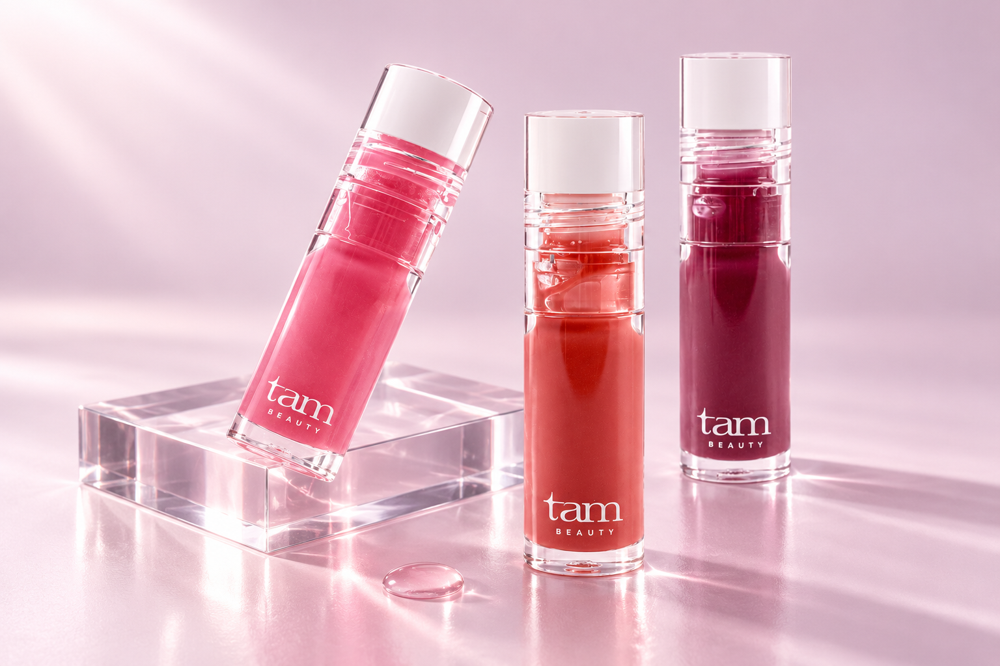
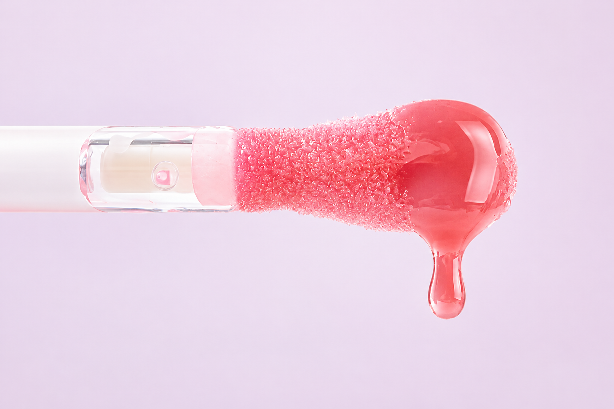

TAM BEAUTY / CREATIVE REBUILD / 2026.10.16
“왜 이 립오일을 사야 할까”부터
다시 설계한 상세페이지.
기존 립 컬러에 촉촉한 광택을 더하고, 단독으로도 맑은 생기를 주는 립 메이크업의 마지막 한 겹.
새 상세페이지 보기 ↗1. 먼저 바꾼 것
첫 시안은 저해상도 입술 크롭을 크게 반복했고, 색상·성분·사용법이 나열되어 제품을 선택할 이유가 약했습니다. V2는 모델과 제품이 함께 등장하는 첫 장면, 구체적인 사용 장면 두 가지, 빅 팁과 오일 사용감, 실제 컬러 선택 순서로 재구성했습니다.
완성된 탐 상세페이지의 860px 폭, Pretendard, 차분한 핑크 계열과 넉넉한 여백은 유지했습니다. 이미지의 선명도와 조명을 새로 맞추고, 대형 입술 단독 섹션을 제거했습니다.
2. 경쟁사 USP와 상세페이지 강점
| 레퍼런스 | 공식 페이지에서 확인한 소구 | 상세페이지 강점 / 탐 적용 |
|---|---|---|
| 힌스 미러 듀 글로스 상세 이미지 확인 | 거울처럼 빛나는 광택, 미끄러지듯 바르는 사용감, 컬러와 케어의 결합. | 제품·어플리케이터·전체 모델 룩이 하나의 캠페인으로 연결됩니다. 탐에는 통일된 모델·제품·팁 이미지와 짧은 감각 카피를 적용했습니다. |
| 딘토 립 오일 상세 이미지 확인 | 광택, 가벼운 사용감, 맑은 컬러를 축으로 제안. | 모델의 분위기로 시작해 핵심 장점과 컬러로 넘어가는 흐름이 명확합니다. 탐도 전체 룩을 먼저 보여준 뒤 실제 발색을 선택 근거로 사용했습니다. |
| 라네즈 글레이즈 크레이즈 상세 이미지 확인 | 광택과 립 케어, 컬러별 무드를 함께 제안. | 제형의 감각을 색과 소품으로 기억하게 합니다. 탐에는 투명 소재와 오일 질감의 사진 문법만 반영하고, 도넛 등 타사 상징은 가져오지 않았습니다. |
| 올리브영 딘토 올리브영 롬앤 | 검색 노출 상품과 판매 페이지를 참고 후보로 수집. | 상세 직접 열람은 접근 제한으로 확인하지 못했습니다. 전체 상세페이지를 검토한 것으로 취급하지 않고, 시각 분석은 위 브랜드 공식 상세 이미지에 근거했습니다. |
경쟁사의 수치·임상·성분 함량·만족도·색상 수를 탐의 효능으로 옮기지 않았습니다. 이는 레퍼런스의 표현 방식에 대한 분석이며 시장 전체의 성과 순위 분석은 아닙니다.
3. 탐의 구매 이유와 근거
| 고객이 원하는 것 | 탐의 제안 | 근거와 표현 범위 |
|---|---|---|
| 매일 쓰는 립을 다른 느낌으로 마무리하고 싶다 | 단독으로 맑게, 립 위에는 촉촉한 광택 | 공식 시어 컬러·광택·사용법을 조합한 사용 장면. 타사 대비 독점 기능으로 주장하지 않음. |
| 광택뿐 아니라 촉촉한 사용감이 필요하다 | 해바라기씨오일·녹차씨오일을 담은 포뮬러 | 공식 전성분 및 제품 설명. 장시간 보습·치료 효과·임상 수치 추가 없음. |
| 도톰해 보이는 립을 연출하고 싶다 | 쿨링감과 입체적인 광택 | 메이크업 연출 효과로 한정. 영구적인 볼륨 증가나 실제 전후 효과 사진으로 표현하지 않음. |
| 편하게 펴 바르고 싶다 | 넓고 둥근 빅 팁 | 공식 팁 이미지와 제품 설명. 비교 기준 없는 “몇 배 큰 팁” 표현 제외. |
제품 사실과 색상 근거: 탐뷰티 공식 상품 페이지. 00 글로스는 이번 립오일 3색 구성에서 제외했습니다.
4. 최종 흐름
- 한 겹 더, 탱글하게. 얼굴 전체와 실제 제품을 함께 보여주는 AI 모델 캠페인.
- 오늘의 립에, 윤기를 한 겹 더. 단독 사용과 레이어링이라는 두 구매 장면.
- 넓게 감싸고, 촉촉하게 빛나고. 팁, 오일 포뮬러, 쿨링감의 구체적인 이유.
- 같은 윤기, 다른 세 가지 무드. 공식 제품 사진과 실제 발색으로 색 선택.
- 마지막 한 겹으로 완성하는 오늘의 립. 간결한 사용법과 컬러 선택으로 마무리.
5. 이미지와 정교화한 프롬프트
가상의 성인 모델을 새로 만들었습니다. 피부결·눈의 생기·손의 형태·메이크업·렌즈·광원·여백까지 지정하고, 제품 외형은 공식 제품 사진을 참조했습니다. 모델 연출은 실제 특정 색상의 발색이나 효능 증거로 사용하지 않았습니다.

1122 × 1402 px / 모델·메이크업·손·제품·광원 지정

1536 × 1024 px / 실제 3색 제품 참조

1536 × 1024 px / 실제 팁 참조
AI 연출은 반사·색감·형태에 실제 제품과 차이가 있을 수 있습니다. 실제 제품 사진과 발색은 색 선택 구간에 따로 사용하고, AI 이미지 가까이에 연출임을 표기했습니다. 실제 발색 원본에는 AI 보정이나 재채색을 적용하지 않았습니다.
6. 납품 구성과 확인 범위
수정 가능한 HTML/CSS, 생성 이미지 원본, 프롬프트 3개, 860px 폭 섹션 PNG 5장, 제품 정보 PNG, 화면 크기별 점검 기록을 함께 제공합니다. 공식몰 상품 상세에는 적용하지 않았으며, GitHub Pages의 별도 V2 검토 링크입니다.
제작 파일 ZIP 다운로드 · 반응형·이미지·링크 점검 기록
카페24의 이미지 상세에 올릴 때는 export 폴더의 01~06 순서로 사용합니다. 클릭형 컬러 이동 링크는 이미지 내보내기에서 제외했습니다. 제품 고시는 현행 판매 라벨 및 최종 판매 조건과 대조 후 적용하는 작업물입니다.